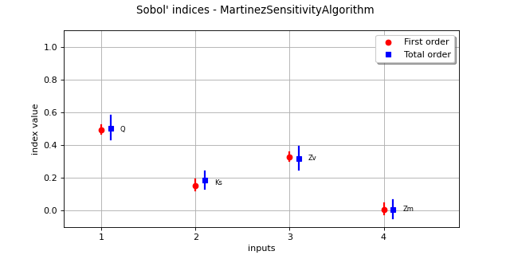

MartinezSensitivityAlgorithm¶
(Source code, png)
{kind=link}

- class MartinezSensitivityAlgorithm(*args)¶
Sensitivity analysis using Martinez method.
- Available constructors:
MartinezSensitivityAlgorithm(inputDesign, outputDesign, N)
MartinezSensitivityAlgorithm(distribution, N, model, computeSecondOrder)
MartinezSensitivityAlgorithm(experiment, model, computeSecondOrder)
- Parameters:
- inputDesign
Sample Design for the evaluation of sensitivity indices, obtained with the
SobolIndicesExperiment.generate()method- outputDesign
Sample Design for the evaluation of sensitivity indices, obtained as the evaluation of a Function (model) on the previous inputDesign
- distribution
Distribution Input probabilistic model. Should have independent copula
- experiment
WeightedExperiment Experiment for the generation of two independent samples.
- Nint
Size of samples to generate
- computeSecondOrderbool
If True, design that will be generated contains elements for the evaluation of second order indices.
- inputDesign
See also
Notes
This class analyzes the influence of each component of a random vector
 on a random vector
on a random vector
 by computing Sobol’ indices (see also [sobol1993]).
The [martinez2011] method is used to estimate both first
and total order indices.
Notations are defined in the documentation page of the
by computing Sobol’ indices (see also [sobol1993]).
The [martinez2011] method is used to estimate both first
and total order indices.
Notations are defined in the documentation page of the SobolIndicesAlgorithmclass. The estimators of the first and total order Sobol’ indices used by this class are respectively:![\hat{S}_i & = \tilde{\rho}_n\left(\tilde{\vect{g}}(\mat{B}), \tilde{\vect{g}}(\mat{E}^i)\right) \\
\widehat{S}_i^T & = 1 - \tilde{\rho}_n\left(\tilde{\vect{g}}(\mat{A}), \tilde{\vect{g}}(\mat{E}^i)\right) \\]()
where
 is the modified sample correlation (under the assumption that the
sample has a zero mean) defined by:
is the modified sample correlation (under the assumption that the
sample has a zero mean) defined by:![\tilde{\rho}_n \left(\vect{z}, \vect{z}'\right) =
\frac{\sum_{k=1}^N z_k z_k'}
{\sqrt{\sum_{k=1}^N z_k^2} \sqrt{\sum_{k=1}^N \left( z_k' \right)^2}}]()
and
 is the centered model based on the sample.
is the centered model based on the sample.The class constructor
MartinezSensitivityAlgorithm(inputDesign, outputDesign, N)requires a specific structure for theoutputDesign, and therefore for theinputDesign. The latter should be generated usingSobolIndicesExperiment(see example below). Otherwise, results will be worthless.Examples
Estimate first and total order Sobol’ indices:
>>> import openturns as ot >>> ot.RandomGenerator.SetSeed(0) >>> formula = ['sin(pi_*X1)+7*sin(pi_*X2)^2+0.1*(pi_*X3)^4*sin(pi_*X1)'] >>> model = ot.SymbolicFunction(['X1', 'X2', 'X3'], formula) >>> distribution = ot.ComposedDistribution([ot.Uniform(-1.0, 1.0)] * 3) >>> # Define designs to pre-compute >>> size = 10000 >>> inputDesign = ot.SobolIndicesExperiment(distribution, size).generate() >>> outputDesign = model(inputDesign) >>> # sensitivity analysis algorithm >>> sensitivityAnalysis = ot.MartinezSensitivityAlgorithm(inputDesign, outputDesign, size) >>> print(sensitivityAnalysis.getFirstOrderIndices()) [0.308902,0.459187,0.00683867] >>> print(sensitivityAnalysis.getTotalOrderIndices()) [0.567786,0.430754,0.244293]
Methods
DrawCorrelationCoefficients(*args)Draw the correlation coefficients.
DrawImportanceFactors(*args)Draw the importance factors.
DrawSobolIndices(*args)Draw the Sobol' indices.
draw(*args)Draw sensitivity indices.
Get the evaluation of aggregated first order Sobol indices.
Get the evaluation of aggregated total order Sobol indices.
Get the number of bootstrap sampling size.
Accessor to the object's name.
Get the confidence interval level for confidence intervals.
getFirstOrderIndices([marginalIndex])Get first order Sobol indices.
Get the distribution of the aggregated first order Sobol indices.
Get interval for the aggregated first order Sobol indices.
getId()Accessor to the object's id.
getName()Accessor to the object's name.
getSecondOrderIndices([marginalIndex])Get second order Sobol indices.
Accessor to the object's shadowed id.
getTotalOrderIndices([marginalIndex])Get total order Sobol indices.
Get the distribution of the aggregated total order Sobol indices.
Get interval for the aggregated total order Sobol indices.
Select asymptotic or bootstrap confidence intervals.
Accessor to the object's visibility state.
hasName()Test if the object is named.
Test if the object has a distinguishable name.
setBootstrapSize(bootstrapSize)Set the number of bootstrap sampling size.
setConfidenceLevel(confidenceLevel)Set the confidence interval level for confidence intervals.
setDesign(inputDesign, outputDesign, size)Sample accessor.
setName(name)Accessor to the object's name.
setShadowedId(id)Accessor to the object's shadowed id.
Select asymptotic or bootstrap confidence intervals.
setVisibility(visible)Accessor to the object's visibility state.
- __init__(*args)¶
- static DrawCorrelationCoefficients(*args)¶
- Draw the correlation coefficients.
As correlation coefficients are considered, values might be positive or negative.
- Available usages:
DrawCorrelationCoefficients(correlationCoefficients, title=’Correlation coefficients’)
DrawCorrelationCoefficients(values, names, title=’Correlation coefficients’)
- Parameters:
- correlationCoefficients
PointWithDescription Sequence containing the correlation coefficients with a description for each component. The descriptions are used to build labels for the created graph. If they are not mentioned, default labels will be used.
- valuessequence of float
Correlation coefficients.
- namessequence of str
Variables’ names used to build labels for the created the graph.
- titlestr
Title of the graph.
- correlationCoefficients
- Returns:
- static DrawImportanceFactors(*args)¶
Draw the importance factors.
- Available usages:
DrawImportanceFactors(importanceFactors, title=’Importance Factors’)
DrawImportanceFactors(values, names, title=’Importance Factors’)
- Parameters:
- importanceFactors
PointWithDescription Sequence containing the importance factors with a description for each component. The descriptions are used to build labels for the created Pie. If they are not mentioned, default labels will be used.
- valuessequence of float
Importance factors.
- namessequence of str
Variables’ names used to build labels for the created Pie.
- titlestr
Title of the graph.
- importanceFactors
- Returns:
- static DrawSobolIndices(*args)¶
Draw the Sobol’ indices.
- Parameters:
- Returns:
- graph
Graph For each variable, draws first and total indices
- graph
- draw(*args)¶
Draw sensitivity indices.
- Usage:
draw()
draw(marginalIndex)
With the first usage, draw the aggregated first and total order indices. With the second usage, draw the first and total order indices of a specific marginal in case of vectorial output
- Parameters:
- marginalIndex: int
marginal of interest (case of second usage)
- Returns:
- graph
Graph A graph containing the aggregated first and total order indices.
- graph
Notes
If number of bootstrap sampling is not 0, and confidence level associated > 0, the graph includes confidence interval plots in the first usage.
- getAggregatedFirstOrderIndices()¶
Get the evaluation of aggregated first order Sobol indices.
- Returns:
- indices
Point Sequence containing aggregated first order Sobol indices.
- indices
- getAggregatedTotalOrderIndices()¶
Get the evaluation of aggregated total order Sobol indices.
- Returns:
- indices
Point Sequence containing aggregated total order Sobol indices.
- indices
- getBootstrapSize()¶
Get the number of bootstrap sampling size.
- Returns:
- bootstrapSizeint
Number of bootstrap sampling
- getClassName()¶
Accessor to the object’s name.
- Returns:
- class_namestr
The object class name (object.__class__.__name__).
- getConfidenceLevel()¶
Get the confidence interval level for confidence intervals.
- Returns:
- confidenceLevelfloat
Confidence level for confidence intervals
- getFirstOrderIndices(marginalIndex=0)¶
Get first order Sobol indices.
- Parameters:
- iint, optional
Index of the output marginal of the function, equal to
 by default.
by default.
- Returns:
- indices
Point Sequence containing first order Sobol indices.
- indices
- getFirstOrderIndicesDistribution()¶
Get the distribution of the aggregated first order Sobol indices.
- Returns:
- distribution
Distribution Distribution for first order Sobol indices for each component.
- distribution
- getFirstOrderIndicesInterval()¶
Get interval for the aggregated first order Sobol indices.
- Returns:
- interval
Interval Interval for first order Sobol indices for each component. Computed marginal by marginal (not from the joint distribution).
- interval
- getId()¶
Accessor to the object’s id.
- Returns:
- idint
Internal unique identifier.
- getName()¶
Accessor to the object’s name.
- Returns:
- namestr
The name of the object.
- getSecondOrderIndices(marginalIndex=0)¶
Get second order Sobol indices.
- Parameters:
- iint, optional
Index of the marginal of the function, equals to
by default.
- Returns:
- indices
SymmetricMatrix Tensor containing second order Sobol indices.
- indices
- getShadowedId()¶
Accessor to the object’s shadowed id.
- Returns:
- idint
Internal unique identifier.
- getTotalOrderIndices(marginalIndex=0)¶
Get total order Sobol indices.
- Parameters:
- iint, optional
Index of the output marginal of the function, equal to
by default.
- Returns:
- indices
Point Sequence containing total order Sobol indices.
- indices
- getTotalOrderIndicesDistribution()¶
Get the distribution of the aggregated total order Sobol indices.
- Returns:
- distribution
Distribution Distribution for total order Sobol indices for each component.
- distribution
- getTotalOrderIndicesInterval()¶
Get interval for the aggregated total order Sobol indices.
- Returns:
- interval
Interval Interval for total order Sobol indices for each component. Computed marginal by marginal (not from the joint distribution).
- interval
- getUseAsymptoticDistribution()¶
Select asymptotic or bootstrap confidence intervals.
- Returns:
- useAsymptoticDistributionbool
Whether to use bootstrap or asymptotic intervals
- getVisibility()¶
Accessor to the object’s visibility state.
- Returns:
- visiblebool
Visibility flag.
- hasName()¶
Test if the object is named.
- Returns:
- hasNamebool
True if the name is not empty.
- hasVisibleName()¶
Test if the object has a distinguishable name.
- Returns:
- hasVisibleNamebool
True if the name is not empty and not the default one.
- setBootstrapSize(bootstrapSize)¶
Set the number of bootstrap sampling size.
Default value is 0.
- Parameters:
- bootstrapSizeint
Number of bootstrap sampling
- setConfidenceLevel(confidenceLevel)¶
Set the confidence interval level for confidence intervals.
- Parameters:
- confidenceLevelfloat
Confidence level for confidence intervals
- setDesign(inputDesign, outputDesign, size)¶
Sample accessor.
Allows one to estimate indices from a predefined Sobol design.
- Parameters:
- inputDesign
Sample Design for the evaluation of sensitivity indices, obtained thanks to the SobolIndicesAlgorithmImplementation.Generate method
- outputDesign
Sample Design for the evaluation of sensitivity indices, obtained as the evaluation of a Function (model) on the previous inputDesign
- Nint
Base size of the Sobol design
- inputDesign
- setName(name)¶
Accessor to the object’s name.
- Parameters:
- namestr
The name of the object.
- setShadowedId(id)¶
Accessor to the object’s shadowed id.
- Parameters:
- idint
Internal unique identifier.
- setUseAsymptoticDistribution(useAsymptoticDistribution)¶
Select asymptotic or bootstrap confidence intervals.
Default value is set by the SobolIndicesAlgorithm-DefaultUseAsymptoticDistribution key.
- Parameters:
- useAsymptoticDistributionbool
Whether to use bootstrap or asymptotic intervals
- setVisibility(visible)¶
Accessor to the object’s visibility state.
- Parameters:
- visiblebool
Visibility flag.
Examples using the class¶